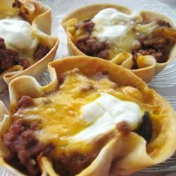

Taco Quiche

Lasagna is a wide, flat sheet of pasta. Lasagna can refer to
either the type of noodle or to the typical lasagna dish which
is a dish made with several layers of lasagna sheets with sauce
and other ingredients, such as meats and cheese, in between the
lasagna noodles.
ingredients
- cooking spray
- 1 pound lean ground beef
- ⅓ cup chopped onion
- 1 (8 ounce) can tomato sauce
- ⅓ cup sliced black olives
- ¼ cup water
- 2 tablespoons hot sauce
- 1 large egg, beaten
- 1 (1.25 ounce) package taco seasoning mix
- 4 (10 inch) flour tortillas
- ⅓ cup sour cream
- ½ cup shredded Cheddar cheese
- Step 1: Preheat the oven to 350 degrees F (175 degrees C). Grease a 12-cup muffin tin with cooking spray.
- Step 2: Cook beef and onion in a large, nonstick skillet over medium-high heat until beef is browned and crumbly, 5 to 7 minutes. Remove from the heat. Drain and discard grease.
- Step 3: Stir in tomato sauce, olives, water, hot sauce, egg, and taco seasoning; mix well.
- Step 4: Cut each flour tortilla into 3 rounds using a 4-inch round cookie cutter. Fit a round into each of the prepared muffin cups and fill each with 1/4 cup meat mixture. Top with sour cream and Cheddar cheese.
- Step 5: Bake in the preheated oven until heated through, about 25 minutes.